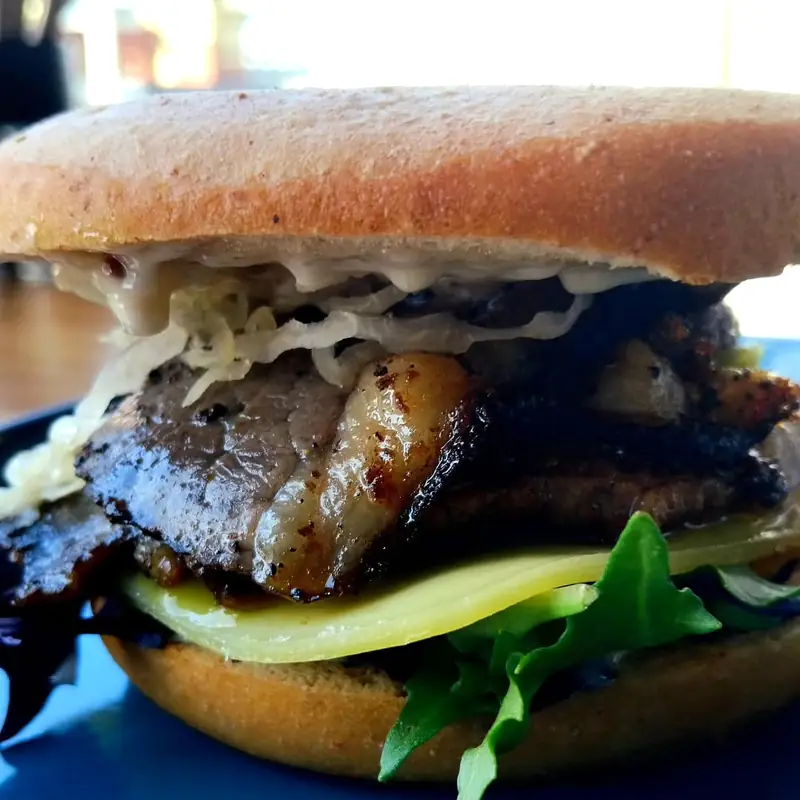
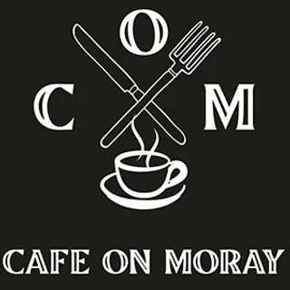
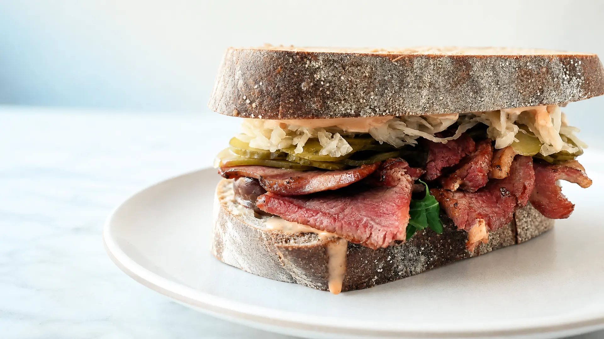
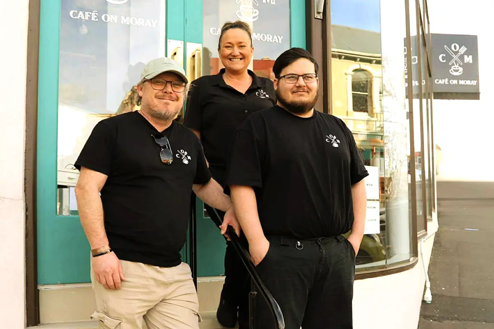
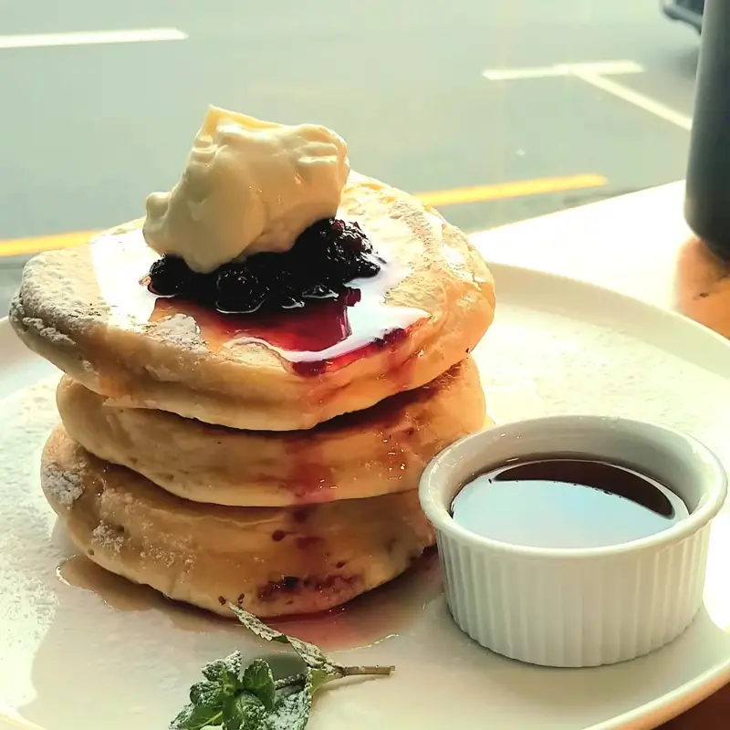
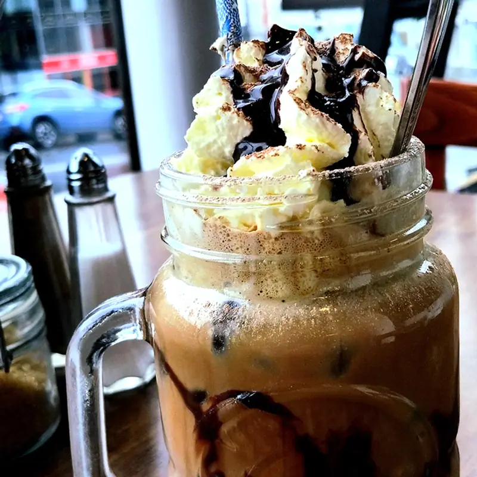
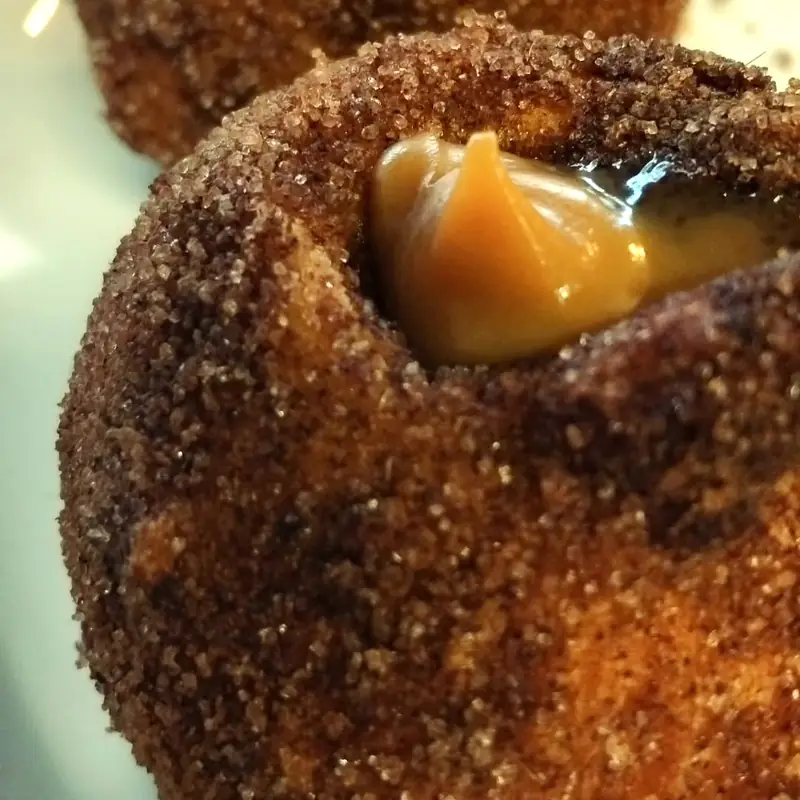
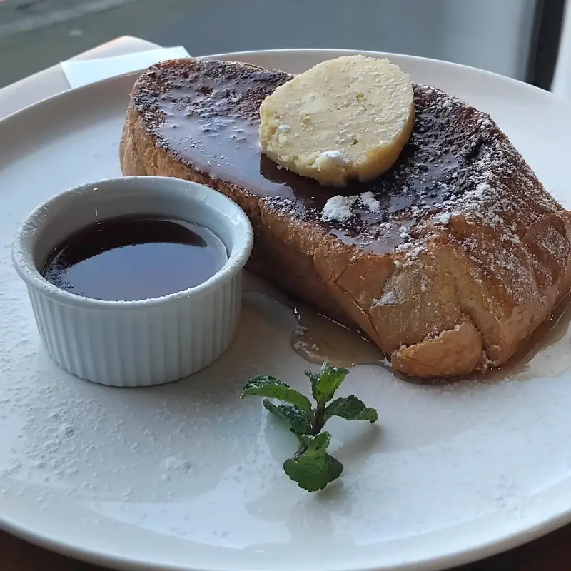
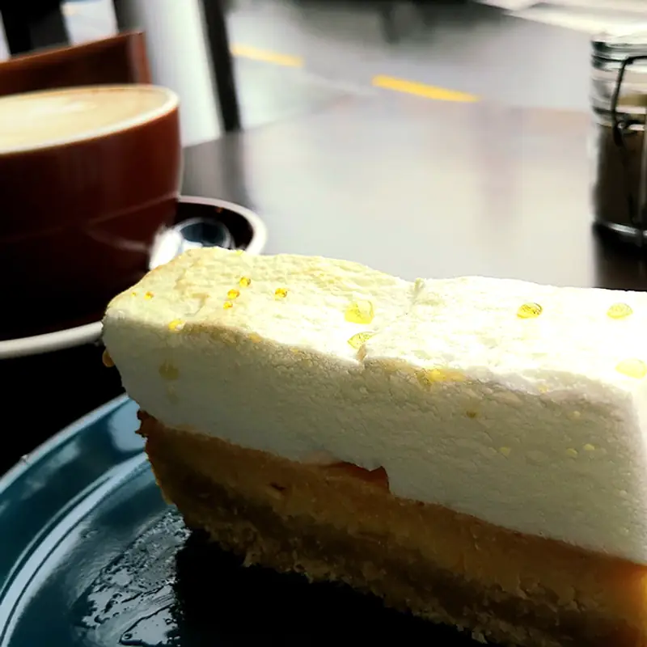

Sandwich · $19
The Cubano
Roast pork, Champagne ham, Swiss cheese, sour pickles, Dijon and garlic butter.

Cafe on Moray111 Moray Place · Dunedin
Dunedin's family-run deli café
Big deli sandwiches, all-day breakfast and local coffee — made with the community in mind.

FamilyA café that knows its neighbours
Cafe on Moray is proudly family-owned and operated. The kitchen cures and roasts deli meats in-house, sources locally and keeps plenty of gluten-free and dairy-free options in the mix.
made here · shared here
Come by Moray Place →
Roast pork, Champagne ham, Swiss cheese, sour pickles, Dijon and garlic butter.

Fresh banana, candied walnuts, blueberry compote and maple syrup.

A chilled café favourite, served alongside our hot drinks and smoothies.
Sweet, savoury, always generous



Open early
Grab a table, a takeaway coffee or a sandwich built for the afternoon.
Hours may change on public holidays. Check official social channels for updates.
Central Dunedin